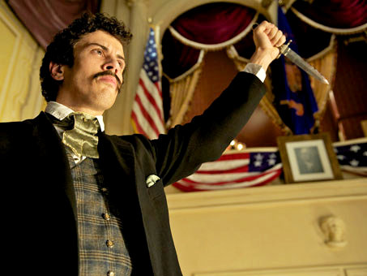
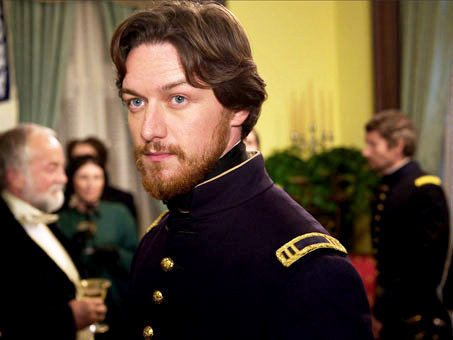

|
Robert Redford's The Conspirator tells the story of the boardinghouse operator
and southerner Mary Surratt--the widowed, Catholic mother of one of John Wilkes Booth's
collaborators--who was tried and convicted as part of the Abraham Lincoln assassination
conspiracy, thereby becoming the first American woman to be executed by the federal
government. By venturing into this story, based on a script originally drafted by the

Robert Redford on the set of The Conspirator
|
screenwriter James Solomon in 1993, Redford takes his accomplished cast into the
notoriously disputatious battlefields of Civil War historians, assassination buffs, and
the Web chatteratti. Though the story has actually been more pored over than genuinely
forgotten--it was the subject, for instance, of a book by the historian Kate Clifford
Larson just three years ago (The Assassin's Accomplice, 2008)--Surratt's case has remained
full of compelling questions, often provoked by gaps in the historical record or the rival
accounts of participants: over her guilt or innocence; over her defense by the
inexperienced, former Union officer Frederick Aiken; and over her execution. A moderate
backlash also occurred when seemingly exculpatory testimony emerged following President
Andrew Johnson's quashing of her defense team's habeas corpus writ. By now, in fact, a
director such as Redford would normally have grown tired of the customary
second-guessing of reviewers--and historians--over his film's details, its implied
argument, and its supposed lessons for today.
But it is a new day, in more ways than one. Instead of standing in solitary vigil,
Redford has a new ally, the American Film Company (afc), at his back. Begun in 2008 by the
founder and former chief executive of TDAmeritrade, Joe Ricketts, afc was launched with
the idea of producing U.S. historical films that head off the postrelease nitpicking that
commonly greets them ("Investing in a Conspiracy of a Past Century," New York Times,
April 10, 2011). Consequently, students, film buffs, and historians can go to afc-
sponsored Web sites timed to coincide with The Conspirator's release--or, perhaps,
head to those of the co-released National Geographic Channel documentary (The
Conspirator: The Plot to Kill Lincoln, 2010)--and download teaching materials, watch
video interviews with consulting historians (Larson, James McPherson, Col. Fred L. Borch
[retired], and others), and post comments on different threads unraveling from the main
ones. (Redford himself could say essentially, in his own prerelease scripted "interviews":
|

Toby Kebbell as John Wilkes Booth The Conspirator
|
don't argue with me; argue with history.) But an even bigger boost to this film had
already come from contemporary events: the Bush and Obama administrations' post-September
11, 2001, use of military tribunals for non-Americans "enemy combatants" in the war on
terror. The main hook for the script now became not the question of the defendant's guilt,
but whether the military court that tried her had succumbed to war hysteria and denied
Surratt her constitutional rights. In the long run, therefore, one feels that The
Conspirator will be remembered largely as a document of this double history: one, of
the history it tells; the other, the story of the afc strategy, and the recourse to a
preemptive, even WikiLeaks-like approach to document the meaning of wars in Surratt's time
and our own.
Filmed in large part in Savannah, Georgia--notably in and around Fort Pulaski, which
stands in for the Washington Arsenal--The Conspirator strikes its political themes
early and often. In several interviews--again, offense as the best defense--Redford spoke
about the film having three narrative frames: the best-known story of the assassinations;
the lesser-known tale of Surratt's trial; and then, an inner frame, most interesting to
him--and most in need of creative license, he felt--representing the relationship between
Aiken (played by James McAvoy) and his stoic client (Robin Wright). (Tom Wilkinson also
gives a persuasive, if characteristically skittish performance as Reverdy Johnson, the
Maryland senator who articulates the constitutional argument to Aiken right before ducking
out of the courtroom--though the real senator did not abandon the hearings, it turns out.)
Most of the action tries both to re-create and to abstract the often-chaotic, off-center
courtroom, by distilling some thirty-odd witnesses down to the essential five, and by
meticulously reconstructing scenes from sources such as Frank Leslie's Illustrated Weekly
as well as Alexander Gardner's famous photographs of the conspirators. But in the end,
the courtroom seems less a genuinely dramatic venue than a place to track McAvoy's
portrait of Aiken's passage from cocky, postwar arrogance to frustrated doubt to
half-apoplectic eloquence. Not unpredictably, however--like many moderately budgeted
historical films ($25 million for this one)--The Conspirator received respectful,
dutiful, but largely mixed reviews. "Preachy" and "dull" were words that went viral across
its popular reception, although reviewers in elite, national publications were more likely
to grant the film's political analogies their due.
If indeed it was ever Redford's or Ricketts's intention to re-create an evenhanded
debate over military tribunals then or now, it will probably seem to many that Secretary
of War Edwin M. Stanton's rationales get the weaker hand in the film. Despite possessing a
remarkably similar facial structure to this notoriously powerful figure, Kevin Kline
nevertheless looks as if he was uncomfortably stuffed into a body suit, and thus into the
role's requisite stern posturing and declamation. As Anthony Lane put it in his New Yorker
review, the producers apparently settled on Kline to play Stanton because Donald
Rumsfeld was unavailable ("Casualties of War," New Yorker, April 18, 2011). Indeed, either
because of or despite its quest for visual authenticity, the film acquires a deliberate,
periodically staged feeling, so much so that its inset production of Our American Cousin
looks too much like what is going on around it. Unlike, say, a film such as Stephen
|

James McAvoy as Frederick Aiken in The Conspirator
|
Spielberg's Amistad (1997), The Conspirator tiptoes rather cautiously within its
genre requirements, lacking the startling revelations of a courtroom procedural,
resisting until the end the operatic feeling of a lamb-to-slaughter melodrama.
The film anchors most of its emotional pull in the beatific pathos of Wright's shrouded
and pained face and in measured treatments of Mary's (yes, Mary's) Catholic faith. For his
inner frame, Redford chose to wind the political awakening of Aiken into a tangled
mother-son tale: Aiken can only be the good son, we are told too explicitly, by playing
up the ill-advised martyrdom of Surratt on behalf of her actual (abandoning) son John
(played by Johnny Simmons). While this kind of domestic allegorizing of the Civil War
has provided much grist for cultural-historical mills over the years, here it seems to do
very little interpretive work. Other than creating a sentimental inner frame, Redford
seemed to want to accentuate the war's redoubling of family disintegration: in one telling
shot (alas, probably invented), having Surratt's daughter blocked from viewing her
mother's face while testifying on her behalf. (Interestingly, Redford has also said he
decided to limit his close-ups of Lincoln's own face.) In the end, however, by
accentuating Mary's role as a mother, Aiken and Redford himself may have unwittingly
supplemented President Johnson's ultimate judgment: of Mary, Johnson reputedly said, "She
kept the nest that hatched the egg."
Despite its limitations, however, the film and its AFC Web sites seem very well suited
to spark debate in classrooms and beyond. For instance, though The Conspirator has
little dialogue, invented or otherwise, that anticipates any debate over Surratt's death
by hanging, the final sequences of the film, attenuated and legitimately so, linger
provocatively over the hanging yard: the specific details such as can- vas ties for the
hands, shoes being removed, Gardner there for his grim task, a final shot as Mary's
hanging hood comes over our line of sight. And accompanied by its ever-expanding archive
of genuinely useful resources, The Conspirator may well provide a venue for questions
that remain interesting precisely because they are unanswered in the film as such: over
how the depth of any one moment of public hysteria can be measured, much less captured
by the conventional montages of newspaper clippings and Lincoln-mourning memorabilia; over
Lincoln's sanctioning of war tribunals, and whether the Supreme Court's subsequent deci-
sion in Ex Parte Milligan (1866) would have saved Mary Surratt; over what kind of All-

Robin Wright as Mary Surratt in The Conspirator
|
the-President's-Men crusader Aiken actually became, despite the near-comic fillip about
his joining the Washington Post that Redford appends right before the film's credits. We
will also need to recognize that the tendency to foil civilian courts to military ones
(without examining the former) is partly what allows, in Lincoln's day or our own, the
criminal justice system to retain the remnants of an often-melodramatic popular
idealization. Redford understandably asks us to be shocked, for instance, that Mary cannot
testify in her own defense; yet in 1865, only Maine allowed prisoners in civilian murder
trials to do so. Meanwhile, prosecution-friendly conspiracy statutes and "joint
enterprise" clauses have always been part of criminal law, even more so of late.
Finally, there may be currents lurking deeper still beneath Redford's sentimental inner
frame. For one, reviewers such as Lane were certainly right: Aiken (a Democrat who, as the
blogosphere was quick to point out, had once volunteered his writing services to the
Confederacy) likely had a more ambiguous character than the film's allegorical positioning
allows for. As the moderately edgy scenes with Surratt's daughter (Evan Rachel Wood) sug-
gest, Aiken's predicament allows us to glimpse a subtext that writers such as George
Orwell or Herman Melville would have appreciated: the degree to which any of us, or any
part of us, can be drawn into the conspiratorial mind-set or even sympathy for the
outcast and the seditious when we witness the state's excesses in defense of its own
survival. And contemporary events always have a way of adding new resonances. As it
happened, The Conspirator was released just weeks after Osama bin Laden was killed--in
Redford's filming, Booth is shot in the back, not having announced his unwillingness to
surrender. And then it became the entire government of Pakistan that should have known
whom it was housing.
Source: Christopher P. Wilson in The Journal of American History
98:5 (December 2011), 934-936.
|